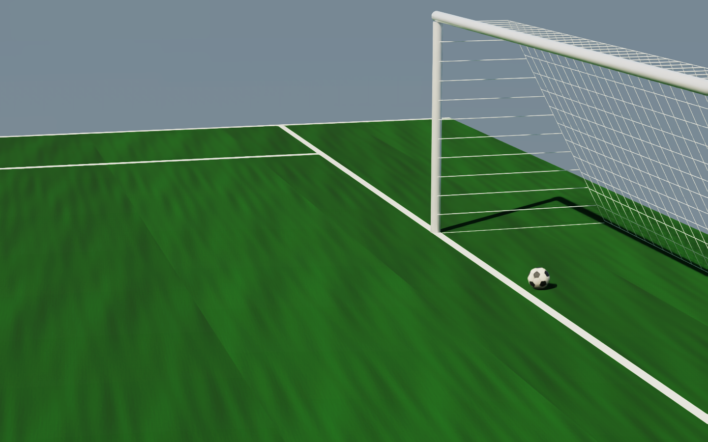

Physics before spectacle
Mechanisms and coefficients are treated as measured models, not demo decoration.
Open research infrastructure
Physics-first environments for embodied intelligence. Every world pairs an interactive task with visual evidence, measurements, reports, and explicit claim boundaries.

Live atlasRobotics
9 atomic robot tasks, from deformable apple cutting to aerodynamic football, each backed by inspectable evidence.
Mechanisms and coefficients are treated as measured models, not demo decoration.
Renders, motion, reports, traces, and limitations stay one click from every task.
Interactive controls and falsifiable acceptance gates make the simulation inspectable.